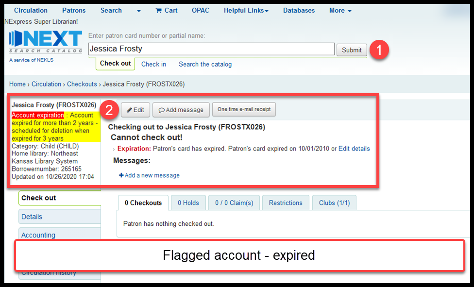
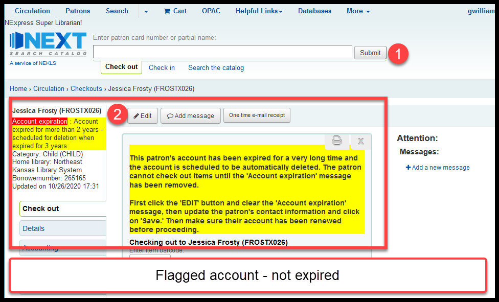
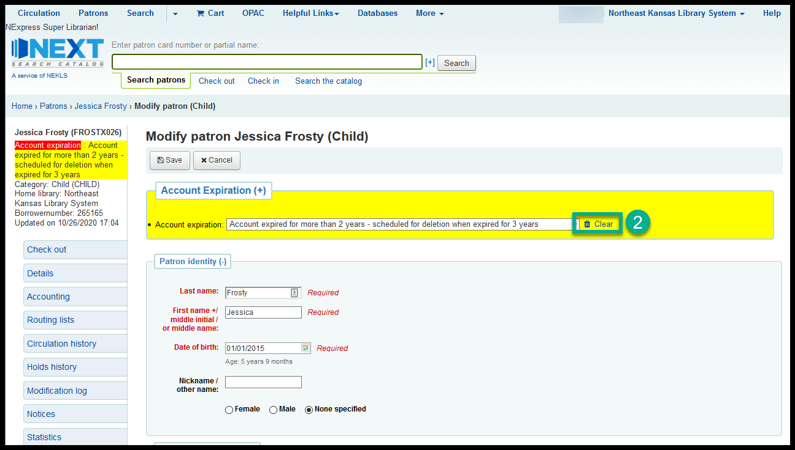
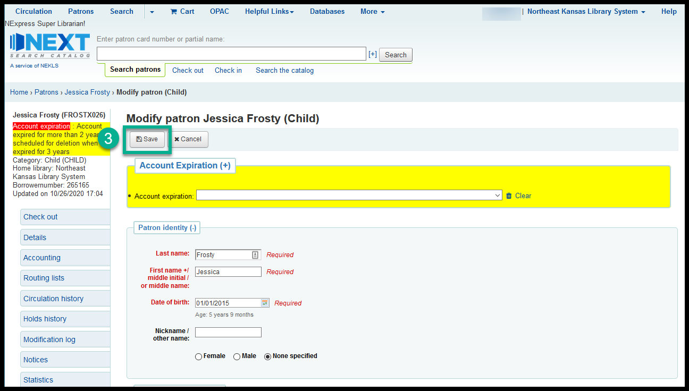
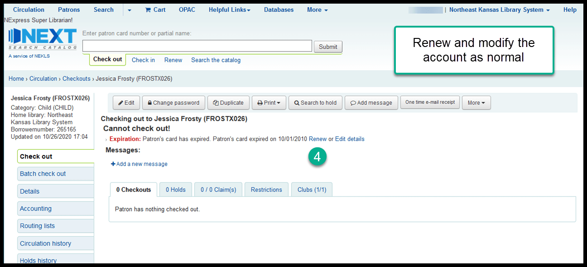

Account expiration flags¶
Borrower accounts with no guarantees, no fees, no items checked out, and no items on hold are deleted when they have been expired for more than 3 years. This process began in September of 2017.
As a part of the deletion process, when accounts have been expired for more than two years, an “Account expiration” flag will be placed on expired accounts:
- Account expired for more than 2 years - scheduled for deletion when expired for 3 years.
- Account expired for more than 2 years - cannot be deleted due to fines/fees/ouverdues/etc.
- Account expired for more than 3 years - cannot be deleted due to problems with the account
- Account expired for more than 3 years - scheduled to be auto-deleted on MM.15
If an account has one of these flags on it, the flag must be removed before you can renew the account or check out materials to the borrower.
Steps to remove account expiration flag:¶
Open the account
Click on “Edit”

Click on “Clear”
Click on “Save”
Click on “Clear”

Questions:¶
Q: When are long expired accounts deleted?
A: According to policy, long expired accounts are deleted at least twice per year. The process does not have a fixed timeline.
Q: Why do we delete accounts that have been expired for more than 3 years?
A: There are several reasons:
- Libraries make some decisions based on a count of their cardholders.
One of the easiest ways to count the number of active library users is by counting the number of active cardholders. Because some libraries make programing and budgetary decisions based on the number of active library users, a best practice is to remove inactive cardholders from the system on a regular basis. - Removing accounts that have been expired for more than 3 years aligns our data with the data being requested by the state and the IMLS.
Every year public libraries are asked to send statistical data to the State Library of Kansas. This data is shared by the State Library with the Institute of Library and Museum Science. Theses statistical surveys assume that the data on card holders is up to date and that we routinely remove unused accounts from our rolls. - Database and other third party service vendors often use a count of library card holders when calculating fees for their products.
By removing accounts that haven’t been used in more than 3 years we can give third party vendors a more accurate count of “active” cardholders upon which they can fairly base fees.
Q: How can an un-expired account have an expiration flag on it?
A:
The most common way is from a staff member not following these directions.
If a staff member doesn’t know how to remove the expiration flag they may look for the renew button when they come across a flagged account. When they don’t find that, they edit the account, don’t remove the expiration flag, and manually change the account expiration date. This does renew the account, but it does not remove the expiration flag.